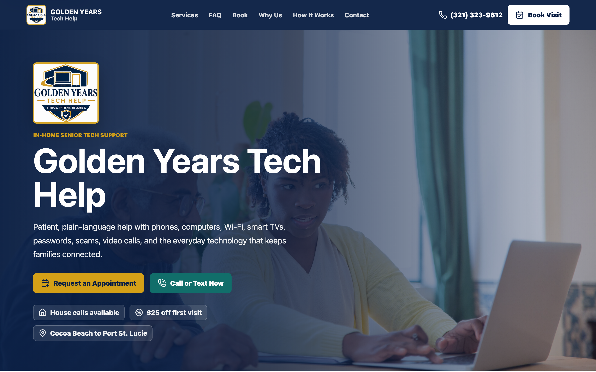

Golden Years Tech Help
A production website and role-aware operations CRM I designed and built for a senior-focused technology support business, backed by PostgreSQL and Supabase with authentication, scheduling, payments, email, calendar synchronization, and audit history.
